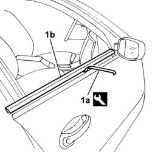

7005D26 GLASS SCRAPER (external) (one) left or right for front side door DESCENDING WINDOW GLASS - R.R.
- Path
- Procedures > 70 FITTINGS > 7005 passenger compartment front side doors > 7005D FRONT DOOR WINDOW GLASSES > 7005D26 GLASS SCRAPER (external) (one) left or right for front side door DESCENDING WINDOW GLASS - R.R.
- Kind
- repair procedure (removal / refitting; the operation number is the code)
- Applies to
- all engines; all production periods
- Interactive page
- https://sloeber94.github.io/elrnDB-lThss/en/#/109124
Applies to: all engines; all production periods
Applies to: all engines; all production periods
 Removing
Removing
 Refitting
Refitting1. Release the outer glass scraper (1b) using the tool (1a) and remove it.
 | Description | Code | Function |
|---|---|---|---|
1a | Removing tool | 1.878.086.000 | Remove the outer glass scraper trim |

Applies to: all engines; all production periods
Refitting
Removing- Check that the outer glass scraper time is not damaged.
- Fit the glass scraper in the housing, checking that it adheres perfectly along the bodyshell profile.